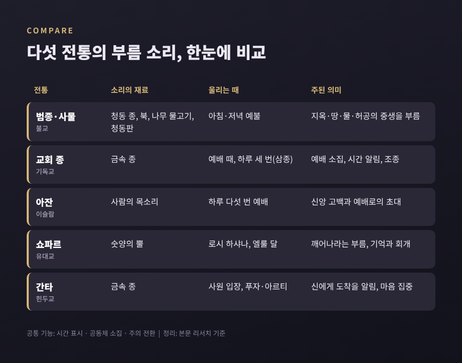
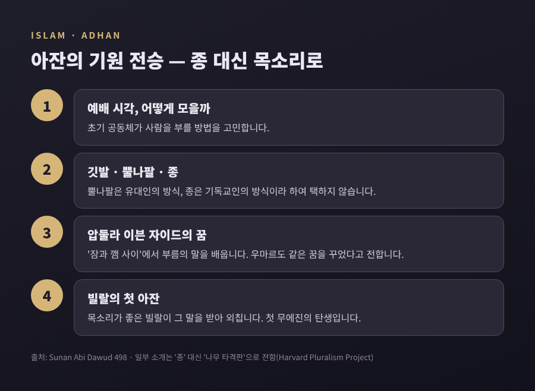

종과 부름의 비교종교학 — 범종·아잔·쇼파르는 왜 소리로 사람을 불렀을까
이번 글에서는 여러 종교가 소리로 시간을 알리고 사람을 불러 모은 방식을 비교해 보겠습니다. 불교의 범종과 사물, 기독교의 교회 종과 삼종기도, 이슬람의 아잔, 유대교의 쇼파르, 힌두교의 간타가 차례로 등장합니다. 어느 신앙이 옳은지를 따지는 글이 아닙니다. 종교학의 눈으로 '소리·시간·공동체'가 어떻게 엮여 왔는지를 살펴보려 합니다.
먼저 요점부터 말씀드리면 이렇습니다.
- 다섯 전통 모두 소리로 하루의 시간을 나누고, 흩어진 사람을 모으고, 마음을 깨웁니다.
- 다른 것은 소리의 재료입니다. 금속 종, 나무와 가죽, 동물의 뿔, 그리고 사람의 목소리.
- 그 재료의 선택에는 각 공동체가 자신을 어떻게 구별하고 기억하려 했는지가 담겨 있습니다.

■ 왜 하필 소리였을까
빛은 벽을 넘지 못합니다. 소리는 넘습니다. 시계가 집집마다 없던 시절, 마을 전체에 같은 순간을 알리는 수단으로 소리만 한 것이 드물었습니다.
종교 의례에서 소리는 세 가지 일을 합니다. 첫째, 시간을 표시합니다. 새벽과 저녁, 정오, 한 해의 첫날 같은 경계를 귀로 느끼게 합니다. 둘째, 공동체를 모읍니다. 같은 소리를 들은 사람들은 같은 장소로 향합니다. 셋째, 주의를 돌립니다. 일상의 일을 멈추고 다른 차원의 시간으로 들어가라는 신호가 됩니다.
이 세 가지 기능은 전통마다 비중이 조금씩 다릅니다. 그 차이를 따라가 보면 각 종교가 '소리'에 무엇을 맡겼는지가 보입니다.
■ 불교 범종과 사물 — 말이 닿지 않는 존재에게
한국 사찰에서는 아침과 저녁 예불 때 네 가지 불구를 칩니다. 이것을 사물(四物)이라 부릅니다. 범종, 법고, 목어, 운판입니다.
한국민족문화대백과사전의 설명을 따르면 각각이 맡는 대상이 다릅니다.
- 범종은 지옥의 중생을 위해 울립니다.
- 법고는 나무 몸통 양면에 소가죽을 씌운 북으로, 땅 위의 중생을 향합니다.
- 목어는 나무로 깎은 물고기로, 물속 중생을 위한 것입니다. 눈을 뜨고 자는 물고기처럼 수행자도 늘 깨어 있으라는 뜻이 담겨 있습니다.
- 운판은 구름 모양의 청동판으로, 허공을 나는 중생에게 소리를 보냅니다.
여기서 눈여겨볼 대목이 있습니다. 사물을 치는 일은 말과 글로 가르침을 전할 수 없는 존재들에게 소리로 전하는 방법이라고 설명됩니다. 사람만을 부르는 소리가 아니라, 온 세계를 향한 부름이라는 생각입니다.
그렇다고 범종이 의례에만 쓰인 것은 아닙니다. 대중을 모으고 때를 알리는 실용적 역할도 함께 해 왔습니다. 상징과 생활이 한 소리 안에 겹쳐 있는 셈입니다.
■ 성덕대왕신종 — 1,250여 년을 울린 소리와 설화
한국 범종을 말하며 성덕대왕신종을 빼놓기는 어렵습니다. 통일신라 경덕왕이 아버지 성덕대왕을 기리려 만들기 시작했고, 아들 혜공왕 때인 771년에 완성했습니다.
수치로 보면 이렇습니다. 높이 3.66m, 입구 지름 2.27m, 무게 18.9t입니다. 벽 두께는 11~25cm에 이릅니다. 무게는 1997년 실제로 측정한 값으로, 그 전에는 약 24t으로 추정했다고 합니다. 명문에는 경덕왕이 구리 12만 근을 시주했다는 기록이 있는데, 당시 근의 기준으로 환산하면 약 30t입니다. 주조 과정의 손실을 감안하면 지금의 무게와 맞아떨어진다는 해석입니다.
종 표면의 명문은 1,000여 자(일부 자료는 1,050자)에 이릅니다. 명문에 나오는 '원음(圓音)'은 석가의 설법 소리를 가리킨다고 풀이됩니다. 종소리를 듣는 일이 곧 가르침을 듣는 일이라는 생각이 새겨져 있는 셈입니다.
이 종은 국내에 남은 가장 큰 종이며, 1962년 국보로 지정되었습니다. 국립경주박물관이 2025년 9월 실시한 타음조사에서는 고유주파수가 과거 측정값과 ±0.1% 이내의 차이만 보였고, 소리가 커졌다 작아졌다를 반복하는 맥놀이의 패턴과 주기도 그대로였다고 합니다.
'에밀레종'이라는 별칭과 그에 얽힌 아이 희생 설화도 널리 알려져 있습니다. 이 설화를 보는 시각은 하나가 아닙니다.
- 성분 분석에서 사람의 인(P) 성분은 검출되지 않았습니다. 사람을 넣고 주조하면 종이 깨져 완성할 수 없다는 지적도 있습니다.
- 설화의 출처를 두고는 조선 후기 유림이 불교를 낮추려 만들었을 가능성을 추측하는 견해가 있습니다.
- 반면 '에밀레종'이라는 이름은 일제강점기 이전 문헌에 보이지 않는다는 조사도 있습니다. 19세기 말 선교사들의 영문 소개, 1920년대 이후 일본인들의 기록과 희곡, 1943년 희곡과 1960년대 영화를 거치며 이 종과 굳게 연결되었다는 연구입니다.
어느 쪽이든 설화가 종의 공식 역사와는 다른 층위의 이야기라는 점은 공통으로 지적됩니다. 소리 자체보다 소리에 덧붙은 이야기가 더 오래 기억되기도 한다는 사실이 흥미롭습니다.
■ 종으로 하루를 나눈 사회 — 인정과 파루, 그리고 삼종기도
소리가 종교 의례를 넘어 사회의 시간표가 된 사례도 있습니다.
조선의 도성에서는 밤 10시경 종을 28번 쳐서 성문을 닫고 통행금지를 알렸습니다. 이것이 인정(人定)입니다. 새벽 4시경에는 33번을 쳐서 성문을 열었습니다. 이것이 파루(罷漏)입니다. 한국민족문화대백과사전은 28번이 하늘의 28수에, 33번이 제석천이 이끄는 33천에 고하는 뜻이라고 설명합니다. 나라의 시간표 안에 별자리와 불교 우주관이 함께 들어 있던 것입니다. 오늘날 섣달그믐의 제야의 종 33번이 파루에서 왔다는 설명도 있습니다. 다만 보신각 타종 행사 자체는 일제강점기에 시작되었다가 1953년에 재개되었다는 기록도 함께 전합니다.
유럽에서는 일찍부터 교회 종이 하루를 나누었습니다. 교회 종이 정확히 언제 도입되었는지는 알 수 없습니다. 400년경 놀라의 주교 파울리누스, 또는 604년 교황 사비니아누스에게서 기원을 찾는 전승이 있지만, 고전적 연구서는 이를 '그렇게 여겨지기도 한다' 정도로 유보합니다. 7세기 초부터 큰 종에 관한 기록이 잦아진다는 점은 비교적 분명합니다.
그 종소리에 맞춰 드리는 기도가 안젤루스, 우리말로 삼종기도입니다. 아침·정오·저녁 하루 세 번 종이 울리면 성육신을 기념하는 기도를 바칩니다. 기원도 한 갈래가 아닙니다. 11세기 수도원의 저녁 종에서 비롯했다는 설이 있지만, 문헌 증거는 1260~80년대 프란치스코회 기록에서 나옵니다. 하루 세 번 체계는 1472년 프랑스 루이 11세의 명령과 연결되곤 합니다. 타종 방식도 독특합니다. 세 번씩 세 묶음을 치는 형식이 15세기 기록에 보이고, 아일랜드 방송 RTÉ는 여기에 아홉 번을 더해 모두 열여덟 번을 울립니다.
교회 종은 기쁨과 슬픔도 알렸습니다. 막 세상을 떠나는 사람을 위해 기도하라는 조종이 대표적입니다. 원래는 기도로의 부름이었으나 점차 부고를 알리는 신호로 바뀌었다고 합니다.
예전엔 종이 곧 시계였습니다. 지금은 손안의 휴대전화가 시간을 알려 줍니다. 그런데도 정해진 시각의 종소리가 여전히 사람을 멈춰 세우는 것은, 그 소리가 단지 시각이 아니라 '함께 멈추는 순간'을 알리기 때문일 것입니다.
■ 이슬람 아잔 — 종 대신 사람의 목소리를 택한 이야기
이슬람은 다른 길을 걸었습니다. 도구 대신 사람의 목소리입니다. 아잔은 하루 다섯 번의 예배를 알리는 부름으로, '신은 가장 위대하다(알라후 아크바르)'는 선언으로 시작해 신앙 고백과 예배로의 초대로 이어집니다.
그 기원에 관한 전승이 흥미롭습니다. 하디스 모음집 『수난 아비 다우드』에 전하는 이야기는 대략 이렇습니다.
- 초기 무슬림 공동체는 예배 시각에 사람을 어떻게 모을지 고민했습니다.
- 깃발을 올리자는 의견, 뿔나팔을 불자는 의견, 종을 치자는 의견이 나왔습니다. 뿔나팔은 유대인의 방식, 종은 기독교인의 방식이라는 이유로 받아들여지지 않았습니다.
- 압둘라 이븐 자이드가 '잠과 깸 사이'에서 부름의 말을 배우는 꿈을 꾸었습니다. 우마르도 같은 꿈을 꾸었다고 전합니다.
- 예언자는 목소리가 좋은 빌랄에게 그 말을 받아 외치게 했습니다.
전승의 세부는 자료마다 조금씩 다릅니다. 하버드 대학 다원주의 프로젝트는 거절된 도구를 '뿔나팔'과 동방 기독교인이 쓰던 '나무 타격판'으로 소개합니다. 금속 종인지 나무판인지는 번역과 전승에 따라 표현이 갈립니다. 그래도 이야기의 뼈대는 같습니다. 이웃 공동체의 소리와 구별되는, 자신만의 부름을 찾았다는 것입니다.
첫 무에진(아잔을 외치는 사람) 빌랄 이븐 라바흐의 이야기도 이 전통에서 큰 의미를 지닙니다. 그는 메카에서 노예로 태어났고, 어머니는 아비시니아(오늘날 에티오피아 일대) 출신으로 전해집니다. 개종 뒤 고문을 받으면서도 '아하드, 아하드(하나, 하나)'를 되뇌었다는 전승이 있고, 아부 바크르에 의해 해방되었습니다. 630년 메카에 들어갔을 때 카바에서 아잔을 외친 사람도 빌랄이었습니다. 다만 그의 사망 연도와 장소에 대해서는 이견이 있습니다.
아잔을 외치는 탑, 미나렛도 처음부터 있었던 것은 아닙니다. 메디나에서는 예언자의 집 문간이나 지붕에서 부름을 외쳤고, 탑 형태의 미나렛은 9세기 무렵부터 확인됩니다. 그 기원을 두고 교회 종탑의 영향, 등대의 영향, 권위의 상징 등 여러 학설이 엇갈립니다. 오늘날에는 대부분 마이크와 확성기를 씁니다. 그래도 부르는 주체가 사람의 목소리라는 점은 바뀌지 않았습니다.

■ 유대교 쇼파르 — 깨어나라는 뿔나팔
유대교의 쇼파르는 동물의 뿔로 만든 나팔입니다. 보통 숫양의 뿔을 씁니다. 정결한 동물의 뿔이면 가능하지만 소뿔은 쓰지 않습니다. 숫양의 뿔은 아브라함이 이삭 대신 바친 숫양을 떠올리게 하고, 굽은 모양은 겸손을 상징한다고 설명됩니다.
쇼파르가 가장 크게 울리는 날은 새해 명절 로시 하샤나입니다. 레위기와 민수기는 이날을 '테루아(나팔 소리)의 날'이라 부르지만, 어떻게 불어야 하는지는 적지 않았습니다. 그 방법은 후대의 전통이 채워 왔습니다.
소리는 세 가지입니다.
- 테키아: 길게 한 번 이어지는 소리
- 셰바림: 세 번 끊어지는 소리
- 테루아: 아홉 번 이상 짧게 끊어 치는 소리
이를 조합해 하루에 100번을 부는 관습이 널리 퍼져 있습니다. 세파르디 공동체는 101번, 일부는 130번을 붑니다. 중세 유대 학자 마이모니데스는 이 소리를 '잠든 자들아, 잠에서 깨어나라'는 부름으로 풀이했습니다. 자신을 돌아보고 돌아오라는 뜻입니다.
흥미로운 점은 계명이 '부는 것'이 아니라 '듣는 것'이라는 사실입니다. 소리를 내는 사람보다 귀 기울이는 공동체가 의례의 중심에 서는 셈입니다. 또 로시 하샤나가 안식일과 겹치면 쇼파르를 불지 않습니다. 누군가 먼 곳에서 쇼파르를 들고 오다 안식일 규정을 어길까 우려했기 때문이라고 탈무드는 설명합니다. 명절 전 한 달인 엘룰 기간에는 매일 쇼파르를 부는 관습도 있어, 소리가 절기의 다가옴을 미리 알리는 역할도 합니다.
■ 힌두교 간타 — 들어섬을 알리는 종
힌두교 사원에는 입구나 성소 가까이에 종이 걸려 있습니다. 산스크리트어로 간타라 부릅니다. 신자는 사원에 들어서며 이 종을 울리는데, 신에게 자신이 왔음을 알린다는 의미로 설명됩니다. 사제는 아르티(등불 공양), 향 공양, 신상 목욕, 꽃과 음식을 올리는 순간마다 종을 울립니다.
간타의 소리는 '상서로운 소리'로 여겨지고, 흩어진 마음을 모아 신에게 집중하게 한다고 전합니다. 종의 몸체는 시간의 신성을 나타낸다는 설명도 있습니다. 시바를 모시는 종 손잡이에는 황소 난디가, 비슈누를 모시는 종에는 신조 가루다가 새겨지기도 합니다.
다른 전통이 '모두를 한꺼번에 부르는' 소리에 무게를 둔다면, 간타는 개인이 성스러운 공간으로 넘어가는 문턱의 소리에 가깝습니다. 부름의 방향이 사람에게서 신에게로 향한다는 점도 눈에 띄는 차이입니다.
■ 비교해 보면 보이는 것
다섯 전통을 나란히 놓으면 공통점과 차이가 함께 드러납니다.
공통점은 분명합니다. 모두 소리로 하루나 한 해의 경계를 긋고, 흩어진 사람을 한 방향으로 모으고, 일상에서 의례의 시간으로 넘어가게 합니다.
차이는 재료와 방향에서 나옵니다. 범종과 교회 종은 공동체 전체를 향해 멀리 울립니다. 간타는 한 사람의 들어섬을 알립니다. 쇼파르는 동물의 뿔로 기억과 회개를 일깨우고, 아잔은 사람의 목소리로 신앙 고백 자체를 공간에 퍼뜨립니다. 사물은 사람을 넘어 땅과 물과 하늘의 존재까지 부른다는 점에서 또 다릅니다.
물론 이런 비교에는 한계가 있습니다. 같은 전통 안에서도 지역과 시대, 종파에 따라 관습이 다릅니다. 기원에 관한 전승도 여러 갈래입니다. 이 글의 비교는 큰 윤곽을 보여 주는 지도일 뿐, 각 신앙이 스스로를 이해하는 방식을 대신할 수는 없습니다.
정리하면 이렇습니다. 종교의 소리는 '지금, 함께, 여기로'라는 세 마디를 각자의 방식으로 번역해 온 것입니다.
다음에 어디선가 종소리나 아잔, 뿔나팔 소리를 듣게 된다면, 그 소리가 몇 번 울리는지 한 번 세어 보시길 권합니다. 그 숫자 안에 한 공동체가 시간을 어떻게 나누고 서로를 어떻게 불러 왔는지가 고스란히 담겨 있습니다.
#비교종교학 #종교와소리 #범종 #사물 #성덕대왕신종 #삼종기도 #아잔 #빌랄 #쇼파르 #로시하샤나